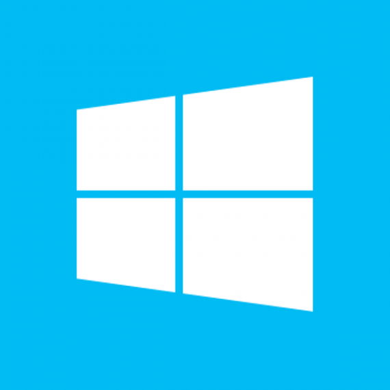
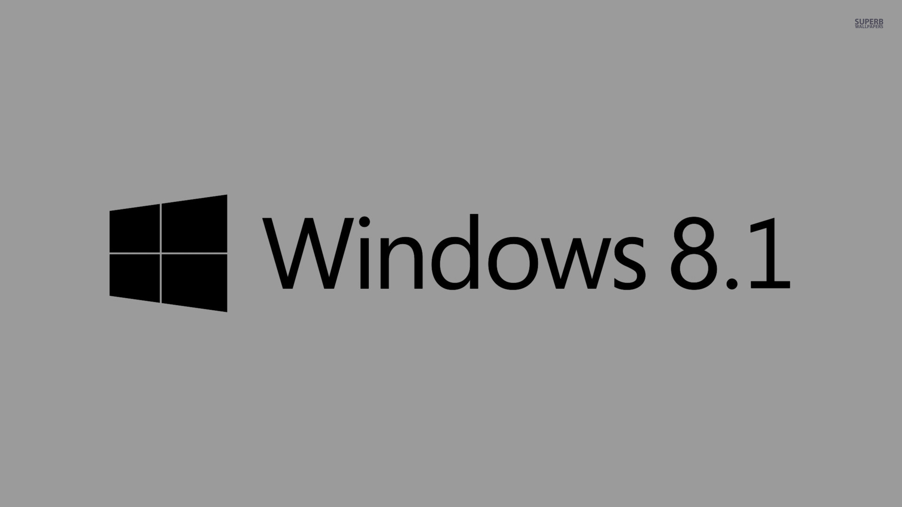
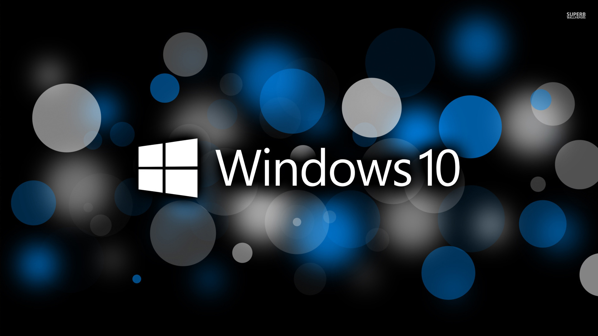
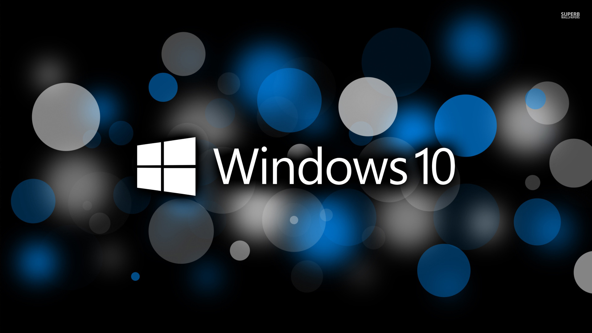

3
4
The end
Perbedaan antara sistem operasi Windows 10 dan Windows 8
MS EDGE
Cortana
Multitasking

Add contents
Fitur baru di Windows 8
Desain aplikasi Windows 8 UI, yang bisa dibuat dari bahasa pemograman apa saja, seperti : HTML/CSS, JavaScript, C, C++, C#, dll.
Hilangnya tombol Mulai (digantikan oleh Layar Mulai dan Charms).
Kompatibel dengan arsitektur Intel, AMD, dan ARM (khususnya tablet).
Kompatibel dengan perangkat berspesifikasi rendah seperti Tablet, Laptop, Netbook, bahkan Smartphone
Learn more templates from: http://focusky.com/
What is Windows 10? And What is the difference between 8 and 10
Sejarah Windows 10
Windows 10 merupakan sistem operasi komputer pribadi yang dikemangkan oleh Microsoft sebaga bagian dari keluarga sistem operasi Windows NT. Diperkenalkan pada tanggal 30 September 2014, dirilis pada 29 Juli 2015.
Sejarah Windows 10
Pertama diperkenalkan pada bulan April 2014 pada Konferensi Build, Windows 10 bertujuan untuk mengatasi kekurangan dalam antarmuka pengguna pertama kali diperkenalkan oleh Windows 8 dengan menambahkan mekanik tambahan yang dirancang untuk meningkatkan pengalaman pengguna untuk perangkat yang tidak ada layar sentuh (seperti komputer meja dan laptop), termasuk kebangkitan menu Mulai yang terlihat di Windows 7, sistem desktop maya, dan kemampuan untuk menjalankan aplikasi Bursa Windows dalam jendela pada desktop daripada modus layar penuh.
Sejarah Windows 8
Windows 8 adalah nama dari salah satu versi Microsoft Windows, serangkaian sistem operasi yang diproduksi oleh Microsoft untuk digunakan pada komputer pribadi, termasuk komputer rumah dan bisnis, laptop, netbook, tablet PC, server, dan PC pusat media. Sistem operasi ini menggunakan mikroprosesor ARM selain mikroprosesor x86 tradisional buatan Intel dan AMD. Antarmuka penggunanya diubah agar mampu digunakan pada peralatan layar sentuh selain mouse dan keyboard, sehingga Windows 8 di desain untuk perangkat tablet sentuh.
Sejarah Windows 8
Microsoft secara resmi merilis Windows 8 pada 26 Oktober 2012 bersamaan dengan peluncuran komputer perdana yang menggunakan Windows 8. Versi percobaan Windows 8 berupa Consumer Preview dan Release Preview.[6] Pada 26 Juni 2013, Microsoft merilis versi Uji Coba dari Windows 8.1 (sebelumnya dikenal sebagai Windows Blue), sebuah peningkatan untuk Windows 8, Windows 7, Windows Vista, dan Windows XP. Pada 18 Oktober 2013, Microsoft merilis Windows 8.1 sebagai pembaruan gratis untuk Windows 8.
 

Start Menu
Kesinambungan via Continuum
Windows Explorer menggunakan ribbon seperti Office 2010 & 2007, juga berganti nama menjadi 'File Explorer
Fitur baru di Windows 8
Hybrid Boot, fitur untuk mempercepat waktu start-up dengan menyimpan memori inti Windows ke dalam hard disk dan me-load-nya tiap booting.
Fitur pengembalian (recovery) baru, Refresh dan Reset. Refresh akan mengembalikan semua file Windows ke kondisi awal tanpa mengubah pengaturan, berkas, atau aplikasi Windows 8 UI. Reset akan mengembalikan komputer ke kondisi standar pabrikan.
Rancangan baru dari Windows Task Manager.
Proses aktivasi yang mudah.
Fitur baru di Windows 8
Diperkenalkannya Layar Kunci (Lock Screen).
Bursa Windows, sebagai tempat membeli atau menginstal aplikasi Windows 8 UI.
Aplikasi Media Penyimpanan Awan baru yang disebut Skydrive.
Antivirus yang sudah terintegrasi dengan Windows Defender.
Pilihan Jenis Log-In yang beragam, yaitu sandi akun Microsoft/lokal, Sandi gambar, dan PIN.
Edisi Windows 8

Windows 8
Windows 8 Pro
Windows 8 Enterprise
Edisi Windows 10

Windows 10 Home
Windows 10 Pro
Windows 10 Enterprise
PREPETORA TEAM
Tomi Aditiya [14.111.0965]
Ryan Rajaya [14.1113279]
Naufal Hadi [14.111.3082]
Muhammad Yasyir [14.111.4142]